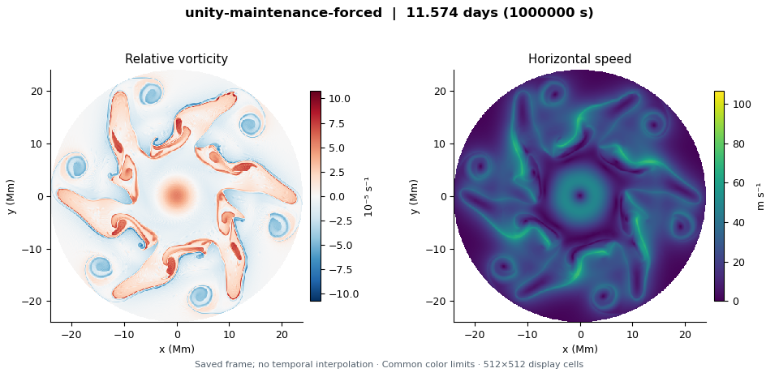

New · Exterior PV · Short CPU pilot
A slowly rotating wave: refinement and perturbations
A 2024-inspired contour construction with prescribed exterior potential vorticity yields a slowly rotating sixfold candidate. In the fixed 16-interface model, doubling the inversion grid changes its fitted drift by 0.30%; adding shape harmonics changes it by 0.005%. Four short evolutions retain the shape while small disturbances that break sixfold symmetry amplify and then partly decline.
6 initial searches · 4 refinement checks · 4 evolutions to 0.35 gas turnovers · Flat lower layer · Convection off · Synthetic nondimensional units
Explore exterior PV and slow drift →Results and provenanceThe finer 33-interface PV search did not pass the equilibrium checks. These results support short-term persistence in a declared finite-interface model; they do not establish smooth-PV convergence, long-term stability, spontaneous emergence, or Saturn's observed phase speed. This contour solver uses a circular wall and differs from the earlier square-domain integrations. Automatic synchronization remains off.
New · Manually published · Coarse dissipation comparison
Does the way energy is removed change the hexagonal flow?
Four completed runs compare momentum drag with relaxation toward uniform layer thickness, each with resting deep flow or a prescribed deep jet matching the initial upper jet component. The initial upper winds, central cyclone, small sixfold disturbance, 3,200-km deformation radius and planetary rotation are shared; convection is off.
4 runs · 1024² grid · 24 selected snapshots: 6 of 26 saved states per run · 144.68 Earth days each · Unity array 66241423
Explore the dissipation comparison →Collection metadataCompare the earlier runs without these added damping terms: resting deep flow · matched deep jet.
The two rates match a 100-day free-mode amplitude decay only at the chosen radial-plus-sixfold scale; this is not a measured Saturn cooling time. With a prescribed deep jet, thickness relaxation can also supply upper-layer energy through its target. The pages show six actual saved times and full-run diagnostic plots, without movies, bulk CSV downloads or a fitted drift. Completion does not establish a stable hexagon, convergence, spontaneous mode selection or agreement with Saturn’s observed phase speed. Automatic synchronization remains off.
New · Manually published · Coarse 145-day preview
Can deep flow change drift while retaining a hexagonal jet?
A lightweight view of the nine completed long runs: six actual saved states per run, plus diagnostic plots. Five vary the deep-jet strength at a 3,200-km deformation radius; four test 2,400 and 4,000 km with resting or matched deep jets. Initial upper winds and planetary rotation are fixed, and convection is off.
9 runs · 1024² grid · 54 selected snapshots: 6 of 126 saved states per run · 144.68 Earth days each · Unity arrays 66150471 and 66150472
Explore the coarse preview →Collection metadataCompare with the earlier 36-day sixfold reference →
Selected snapshots show actual saved times with no interpolation. Diagnostic plots use the full recorded time series; this preview omits movies and bulk CSV downloads. Fresh integrations from a small m=6 seed, with a prescribed circular lower jet and no lower cyclone. Completion is not evidence of general stability or a measured match to Saturn’s drift. The model frame is not yet registered to System III. Automatic synchronization remains off.
New · Manually published · Deep-flow component comparison
Which deep-flow component supports the polar jet?
Four completed runs start from the same upper circular jet and reference cyclone while prescribing a lower flow with half the jet, the full jet, the full cyclone, or both full components. The upper flow evolves freely. All use the same broadband modes 2–8 disturbance and evolve for 3,125,000 seconds (36.17 Earth days), with a 3,200-km deformation radius and convection off.
4 runs · 1024² · 256 actual saved frames · seed 42 · Unity array 66129727
Explore the deep-flow comparison →Collection metadataCompare with the reference broadband run with a resting lower layer →
Archive checksum and frozen configuration, source and dependency provenance verified. These are regularized QG analogues of Rostami, Zeitlin & Spiga (2017); the paper solves full rotating shallow water. The prescribed lower flow matches only the circular base components; the disturbance remains in the upper layer. The reference upper cyclone has order-one vorticity relative to the Coriolis parameter, outside a controlled small-Rossby-number QG regime. Completion does not establish a connected stable hexagonal jet, convergence, spontaneous mode selection, or agreement with Saturn’s observed drift.
New · Automatically synchronized · 2017 QG formation comparison
Jet-only and central-cyclone formation experiments
Six completed runs compare the circular jet alone with reference and stronger central cyclones. Each starts with either an imposed sixfold disturbance or random-phase modes 2–8, then evolves for 3,125,000 seconds (36.17 Earth days; f₀t = 1000).
6 runs · 1024² · 384 actual saved frames · resting deep layer · 3,200-km deformation radius · convection off · Unity array 66119595
Explore the 2017 formation comparison →Collection metadataArchive checksum and frozen configuration, source and dependency provenance verified. These are regularized QG analogues of Rostami, Zeitlin & Spiga (2017), with a smoothed core and annular streamfunction disturbances; the paper solves full rotating shallow water. The reference and stronger cores exceed a controlled small-Rossby-number QG regime. An imposed m=6 disturbance does not test spontaneous mode selection. Completion or a sixfold signal alone does not establish a connected stable hexagonal jet, convergence, or observed-drift agreement.
New · Automatically synchronized · Whole-profile stabilization
Deformation radius and deep-flow matching
Nine completed runs compare deformation radii of 2,000, 3,200 and 4,000 km with prescribed lower flows equal to 0, 50 or 100% of the upper circular jet and central cyclone. Each starts with the same broadband disturbance and evolves for 500,000 seconds.
9 runs · 1024² · 99 actual saved frames · convection off · Unity array 66111887
Explore the matching screen →Collection metadataArchive checksum and frozen configuration, source and dependency provenance verified. Matching applies to the circular base flow, while its disturbance remains in the upper layer. These single-seed runs do not establish a stable hexagon or an observed-drift fit. The unmatched 2,000-km case has an initial thickness-anomaly bound of about 0.315, requiring caution about the QG approximation.
New · Automatically synchronized · Rostami 2017 QG analogue
Circular-flow controls before hexagon formation
Three unperturbed flows compare the annular jet alone with reference and stronger central cyclones. Each evolves for 100,000 seconds with a resting deep layer, a 3,200-km deformation radius and convection off.
3 runs · 1024² · 15 actual saved frames · Unity array 66111888
Explore the Rostami controls →Collection metadataArchive checksum and frozen configuration, source and dependency provenance verified. These controls assess numerical evolution of the circular base flows before perturbed formation runs; remaining circular does not establish perturbation stability. The stronger cores have order-one vorticity relative to the Coriolis parameter, outside a controlled small-Rossby-number QG regime.
New · Automatically synchronized · Earlier campaigns
Completed controls and initial parameter screen
Eleven completed unforced runs are now available in two separate collections. Both start from the earlier annular jet-and-cyclone family; these are separate from the Rostami 2017 benchmark.
Whole-profile base-flow controls
Four unperturbed circular-flow cases run to 100,000 seconds, and one broadband-perturbed barotropic case runs to 500,000 seconds. The infinite-deformation-radius cases deliberately decouple the prescribed deep flow.
5 runs · 1024² · 31 saved frames · convection off
Explore the controls →Deformation and deep-jet screen
Six broadband-perturbed runs compare the barotropic limit with 2,000 and 4,000 km deformation radii and different prescribed deep annular jets. All run to 500,000 seconds.
6 runs · 1024² · 66 saved frames · convection off
Explore the initial screen →Unity arrays 66089060 and 66074838 · Archive checksums and frozen configuration, source and dependency provenance verified. Saved flow, diagnostics and discrete-frame movies accompany each run. Completion alone does not establish nonlinear stability, convergence, or an observational phase-speed fit.
New · Rostami 2017 QG analogue · software validation
Circular jet and central cyclone: CPU/GPU checks passed
The new collection checks the regularized circular flow inspired by Rostami, Zeitlin & Spiga (2017): a jet-only case, a reference cyclone with a half-matched deep jet, and a reference cyclone with fully matched deep jet and cyclone.
3 runs · 512² grid · 0–400 simulated seconds · 5 saved frames per run · convection off
The largest final relative L2 difference across the checked fields is 5.08 × 10⁻¹⁶, below the 10⁻⁸ tolerance. These are software checks, not evidence of stabilization or hexagon persistence. The jet-only case has a different upper flow from the two reference cases.
View the Rostami validation runs →Collection metadataUnity array 66091773 · Archive checksum verified before rendering. These runs form the validation stage of a 32-case campaign. The six formation runs and four deep-flow component comparisons are published in dedicated collections. The new 145-day preview further varies deep-jet strength and deformation radius.
Rostami experiment protocol ↗
Automatic synchronization is off. Future collections are published on request after collection, provenance checks, rendering and review. This page records verified publications, not live scheduler status.
COMPLETED COMPARISON · EXPLORATORY RESULTS
Convection on, convection off
Two million-second integrations begin with the same seeded sixfold jet. Both amplify the disturbance and roll up into lobes and vortices. This pair does not establish a maintained hexagonal jet.
Two runs · 1024² grid · 11 saved states per run · 11.57 simulated days · identical initial upper flow
Explore the flow and diagnostics →Comparison metadata
Final convection-on state. All frames use actual saved times and shared colour scales. Playback repeats sparse snapshots; it does not reconstruct motion between them.
Published · software validation
Whole-profile lower layer: CPU/GPU checks passed
Three Unity checks cover the barotropic limit, a half-matched deep flow at a 3,200 km deformation radius, and a fully matched deep flow at 500 km. The prescribed lower flow includes the upper circular jet and central cyclone; the initial azimuthal disturbance stays in the upper layer.
3 runs · 256² grid · 0–400 simulated seconds · 5 saved frames per run · convection off
The largest final relative L2 difference across the checked fields is 6.95 × 10⁻¹⁵, below the 10⁻⁸ validation tolerance. These short comparisons check the implementation. They do not establish stability, spatial convergence, phase-speed agreement or a maintained hexagon.
View the validation runs →Collection metadataUnity array 66081490 · Archive checksum verified before rendering. Little flow evolution is expected over this short interval.
Earlier stabilization campaign · 39 configurations
Isolate the deep-layer effect
The staged campaign varies deformation radius, whole-profile matching strength and jet width, then tests numerical and domain sensitivity. Convection is off throughout this first campaign.
| Stage | Cases | Gallery status |
|---|
| CPU/GPU validation | 3 | Published |
| Base-flow controls | 5 | Published |
| Deformation / deep-flow screen | 9 | Published |
| Small-deformation transition | 4 | Not published |
| Jet-width sensitivity | 6 | Not published |
| Numerical checks | 10 | Not published |
| Domain sensitivity | 2 | Not published |
Publication status is shown here; it is not live scheduler status. Completed Unity jobs appear after their collected outputs have been transferred, rendered and published.
Read the stabilization experiment protocol ↗
The scientific test
Shape, persistence and drift
A sixfold image is only a starting point. A candidate must retain a connected jet, survive competing disturbances and numerical checks, and agree with the observed pattern motion and upper winds.
Earlier flow-field collections show saved fields and runtime diagnostics without a fitted pattern speed. The exterior-PV contour study separately reports nondimensional fitted drift in its synthetic model frame. Interpret centreline measurements alongside the flow fields, especially after jet breakup. Missing mode measurements remain gaps. A sixfold-seeded run does not test spontaneous selection of six sides.
Small deformation radii can imply interface displacements outside standard QG. Physical-regime checks accompany the parameter study; future goflow velocity estimates will supply observational constraints.
Model and limitations ↗